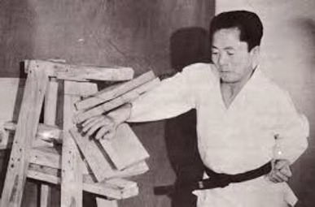

Nuestra Escuela
Tradición y ModernidadEn el Club Deportivo Guerrero Dojang, combinamos la enseñanza tradicional del Taekwondo con las técnicas de entrenamiento más modernas. Nuestro Dojo fomenta valores como la disciplina, el respeto y la superación personal en un ambiente seguro y motivador para todas las edades.
Historia del Taekwondo: De las antiguas tradiciones coreanas al mundo modernoEl Taekwondo es mucho más que un deporte: es una manifestación viva de la historia, la cultura y la filosofía de Corea. Su historia se remonta a más de 2.000 años, cuando los antiguos guerreros coreanos practicaban artes marciales como parte de su entrenamiento físico y espiritual. Estas primeras formas de combate, como el Taekkyon, el Subak y el Hwa Rang Do, sentaron las bases del Taekwondo que conocemos hoy.
Nuestra misión es guiar a cada estudiante en su camino marcial, ayudándole a alcanzar su máximo potencial físico y mental.
Durante el reino de Goguryeo (37 a.C. – 668 d.C.), ya se practicaban formas de combate similares al Taekwondo, como lo evidencian pinturas murales encontradas en tumbas reales. También en la dinastía Silla, un grupo de jóvenes nobles conocidos como los Hwarang fue entrenado en artes marciales, ética y filosofía. Su código de honor —basado en valores como la lealtad, el respeto, el coraje y la disciplina— sigue siendo una parte fundamental del Taekwondo actual.
A lo largo de los siglos, estas técnicas evolucionaron, pero fue después de la liberación de Corea del dominio japonés (1945) cuando el Taekwondo comenzó a tomar forma como arte marcial moderno. Diversos maestros coreanos, que habían aprendido estilos tradicionales y también artes marciales japonesas como el Karate, comenzaron a fundar sus propias escuelas o kwans. En 1955, bajo el liderazgo del General Choi Hong Hi, se unificaron varios estilos y se propuso el nombre "Taekwondo", que significa: Tae (태): Patada Kwon (권): Puño Do (도): Camino o vía Es decir, el camino del pie y del puño, pero también el camino hacia el crecimiento personal.
El Taekwondo no solo te enseña a defenderte. Te ayuda a desarrollar tu carácter, tu fuerza interior y tu confianza. Te reta a superarte, a ser constante y a respetar a los demás. Es perfecto para niños, jóvenes y adultos que buscan algo más que ejercicio: buscan una transformación personal. En cada clase, aprenderás mucho más que técnicas: aprenderás a enfrentar los desafíos de la vida con determinación, respeto y valentía.
Horarios
Encuentra el plan perfecto para ti| Clase | Horario |
|---|---|
| Taekwondo Infantil | Lunes y Miércoles, 17:30 - 18:30 |
| Taekwondo Junior | Lunes y Miércoles 18:30 - 19:30 |
| Taekwondo Adulto | Lunes y Miércoles 20:00 - 21:00 |